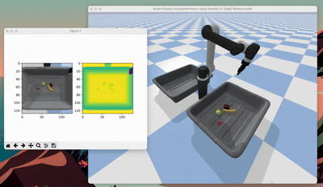

← Back to home
Robot Perception Pick-and-Place: Modular vs End-to-End
EE227: Robot Perception | 09/2025 – 12/2025
video (modular)
/
video (end-to-end)
/
drive
Overview
Compared a modular pose-based pipeline and an end-to-end action-affordance model
for robotic pick-and-place, highlighting trade-offs between interpretability, robustness, and generalization.
Approaches
|
Modular Pipeline

- U-Net segmentation → masking → ICP pose estimation (RGB-D).
- Estimated poses used for grasp planning and execution.
- Assumptions: known object geometry, good depth, accurate segmentation, reasonable ICP initialization.
|
End-to-End Affordance Learning

- Predicts action affordances directly from RGB.
- Fully convolutional spatial-action maps using local geometric cues.
- Affordances evaluated over 8 discrete rotation bins for robust orientation search.
|
Key Improvements
|
Modular
|
-
Built a full pose-based pick-and-place stack in PyBullet (UR5 + bins + RGB-D top-down camera),
including IK-based tool motion and a grasp primitive with success checking.
-
Implemented segmentation + depth → point cloud → ICP alignment, and compared
state-based (oracle pose) vs ICP-based execution to analyze pose error sensitivity.
|
|
End-to-end
|
-
Used dense Gaussian affordance scoremaps and evaluated grasps over
8 discrete rotation bins for robust orientation search.
-
Added failure suppression using a Gaussian mask over previously failed grasps,
improving clutter performance from 8/15 → 15/15 objects.
|
Takeaways
- Modular: interpretable and precise, but brittle to perception errors.
- End-to-end: generalizes better and is more robust in clutter.
- The choice depends on deployment needs and tolerance for failure modes.
← Back to home